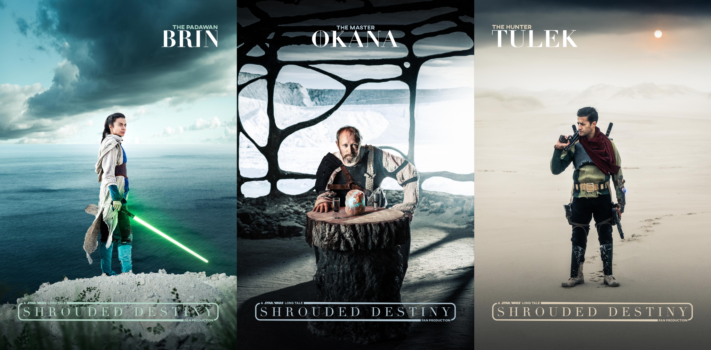
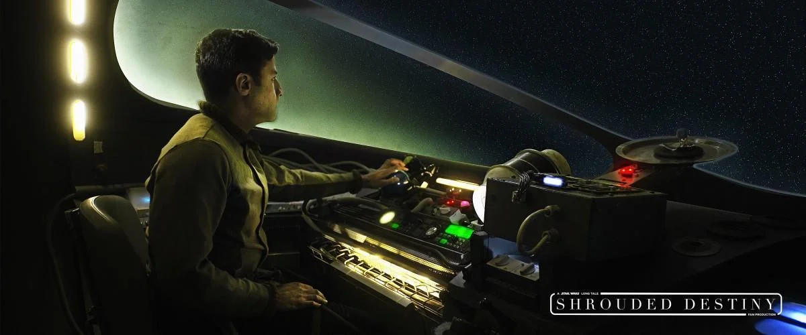
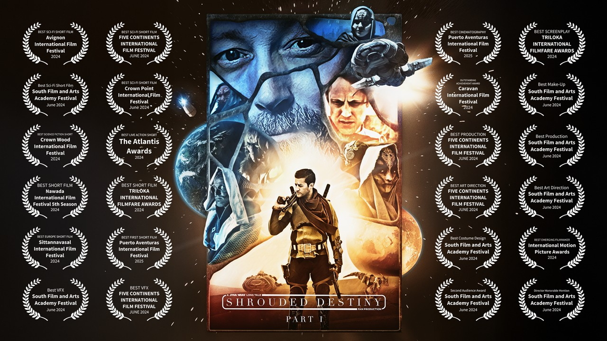
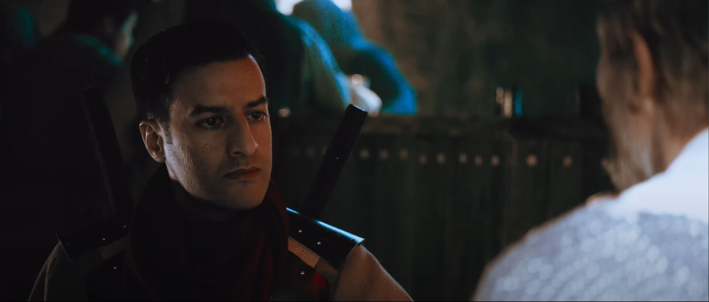
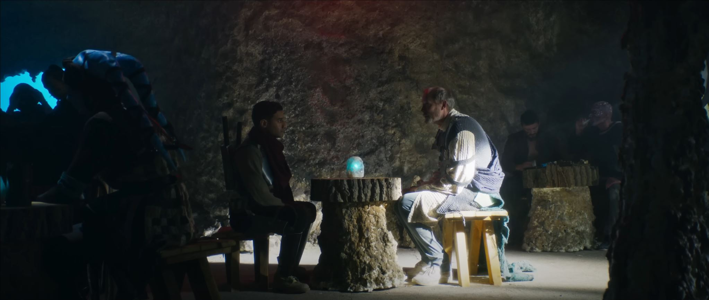
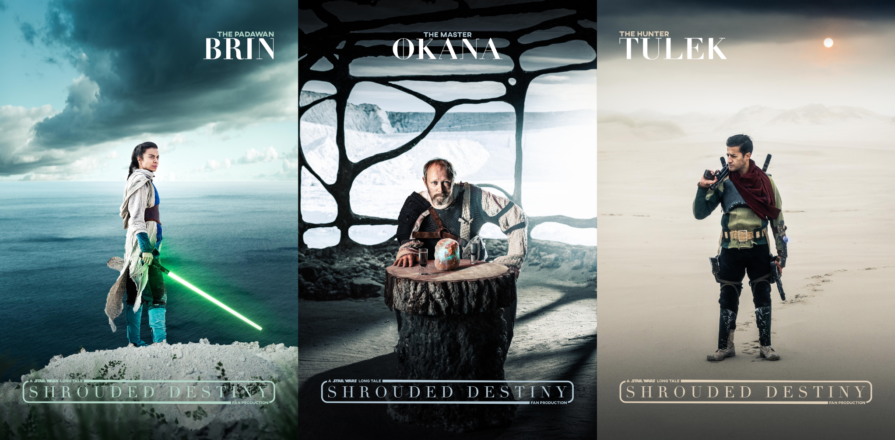
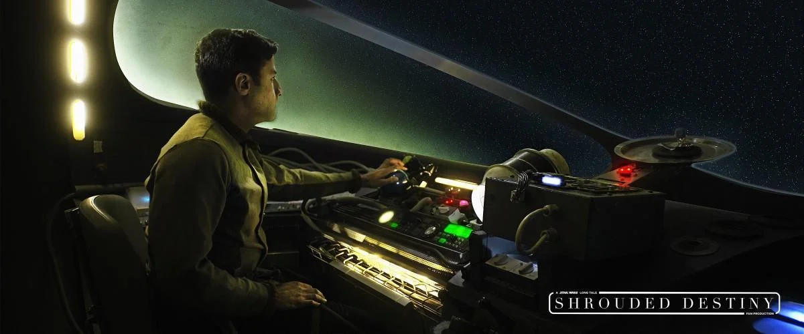
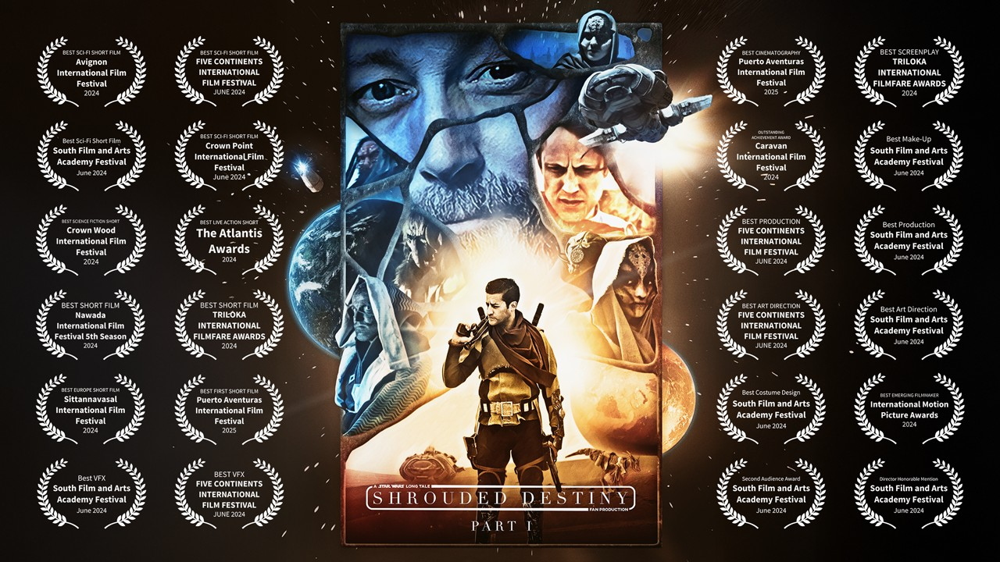
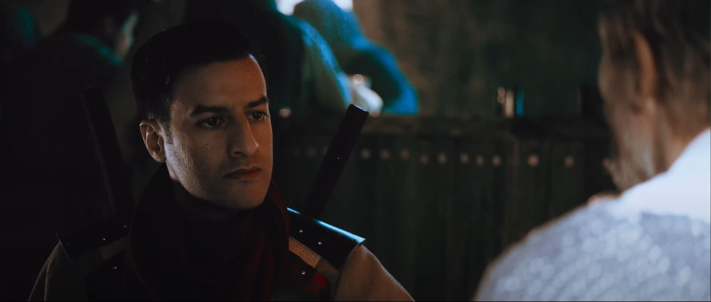
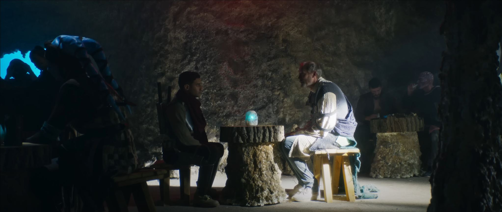

Shrouded Destiny "A Star Wars Long Tale" Part I
Shrouded Destiny est un fan production basé sur l'univers de Star Wars supervisé et imaginé de toute pièce par monsieur Shahbaz Sarwar ( acteur et producteur ). Ayant fait ses études à Hollywood il a rencontré beaucoup d'acteur de notoriété qu'il a recruté pour le film, notamment Lars Mikkeslen qui n'est d'autres que le frère de Mads Mikkeslen. Ainsi que Laûren Okadigbo dans des seconds rôles pour des films comme "Wonder Woman", "Justice League", "Ready Player One". Avoir eux la chance de travailler sur des plans avec des acteurs comme ceux là, cela a été un vrai plaisir. Pour ce projet j'ai été recruté en tant qu'artist 3D / animateur et 2D compositor (intégration 3D / motion tracking / removing / keying).
Shrouded Destiny is a fan production based on the Star Wars universe, supervised and conceived entirely by Mr. Shahbaz Sarwar (actor and producer). Having studied in Hollywood, he met many well-known actors whom he recruited for the film, including Lars Mikkeslen, who is none other than the brother of Mads Mikkeslen. Laûren Okadigbo also appeared in supporting roles in films such as Wonder Woman, Justice League, and Ready Player One. It was a real pleasure to have the opportunity to work on scenes with actors like these. For this project, I was hired as a 3D artist/animator and 2D compositor (3D integration/motion tracking/removing/keying).
 








